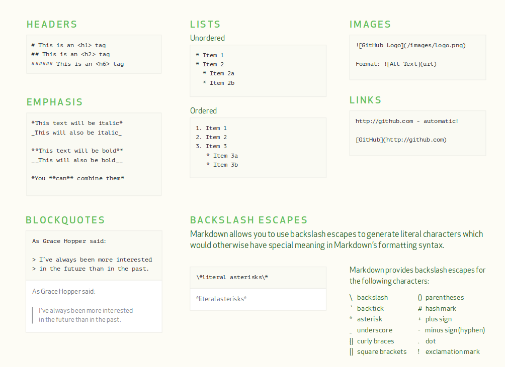
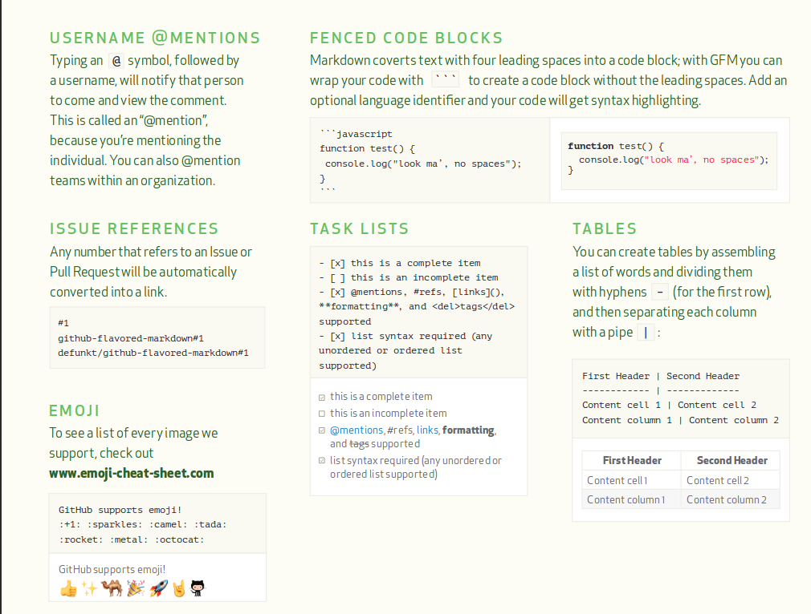
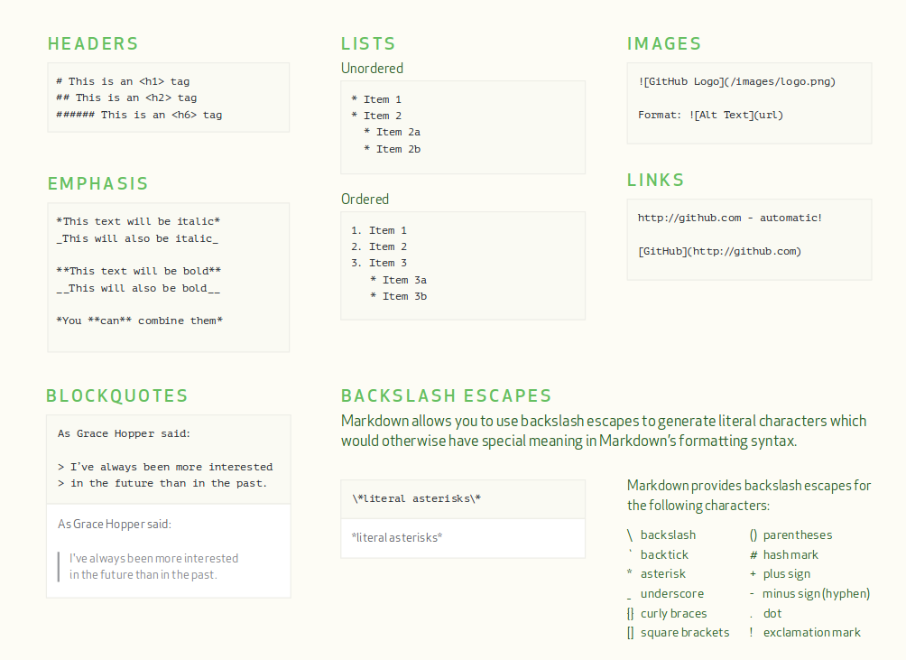
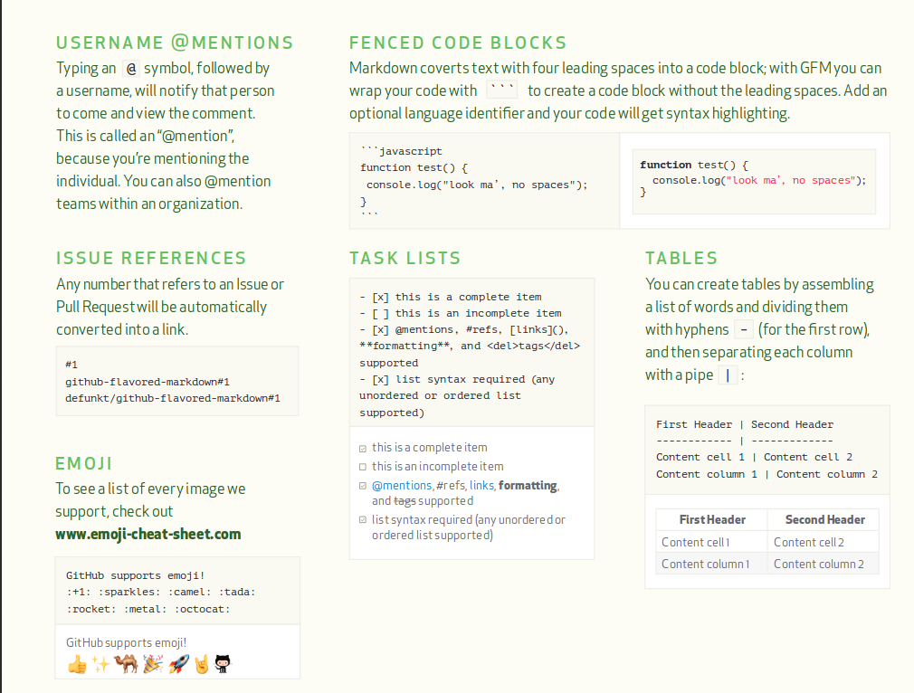

images statiques
On utilise:

Format: 
 
Images dinamiques ( gif ):

Markdown est un système d’édition et de formatage de texte ;
c’est à la fois une syntaxe, un script de conversion texte → HTML et un format de fichier.
Il est couramment utilisé pour les fichiers de documentation d’un projet ou d’un jeu de données -souvent nommé readme.md.
Il est stocké au format texte classique et est plus léger que sa version interprétée puisqu’il ne contient pas les balises html.
La philosophie du système veut que le texte écrit soit lisible sans interpréteur particulier en mode texte.
Il est léger et épuré de l’essentiel de la verbosité d’un language balisé.
Les éléments de syntaxe sont des caractères de ponctuation qui font sens visuellement même non convertis.
Une fois converti, le navigateur web (qui joue alors le rôle d’interpréteur) en rendra la lecture plus claire.
Les fichiers sont généralement enregistrés avec l’extension .md (ou .markdown ) pour indiquer aux interpréteur la nature du texte qu’il vont lire ; mais ça n’a rien d’obligatoire.
Comme le résultat sera exporté en HMTL, vous pouvez tout à fait introduire directement des balises HTML dans votre texte ;
mais celui-ci deviendra moins lisible et ne pourra plus être édité par quelqu’un ne maîtrisant pas le HTML.
Attention, le formatage markdown ne sera pas appliqué à l’intérieur de ces balises.
pour utiliser on utilisera cette syntaxe :
Pour afficher un paragraphe, sautez deux ligne et de taper son texte.
Un seul saut de ligne correspond à un retour chariot et pas à un changement de paragraphe.
Pour formater une partie de votre texte comme emphase, entourez le par des astérisques ou des underscores.
Entourer par un signe unique passe en italique (emphase faible : ;) et par un double signe en gras (emphase forte: *;).
Il est possible de combiner les deux. Un double tildes vous permettent de barrer le texte.
À titre personnel, j’utilise plutôt les astérisques, mais c’est une question de goût. La seule chose importante est d’être cohérent dans vos documents.
italique: * * ou _ _ , en bold: ** ** ou __ __ , ~~barrés~~ .
Sauter une ligne avant le début de la liste. puis on ajoute soit un * , + ou un - avant chaque point.
* + Poires
1. + mon premier
2. + mon deuxième
[ ] Case non cochée
On crée des tables en assemblant des - pour les row et | pour les columns
| Titre 1 | Titre 2 | Titre 3 |
| :------------ | :-------------: | -------------: |
| Colonne | Colonne | Colonne |
| Alignée à | Alignée au | Alignée à |
| Gauche | Centre | Droite |
| Titre 1 | Titre 2 | Titre 3 |
|---|---|---|
| Colonne | Colonne | Colonne |
| Alignée à | Alignée au | Alignée à |
| Gauche | Centre | Droite |
utiliser:  ou http://github.com - automatic!
images statiques
On utilise:

Format: 
 
Images dinamiques ( gif ):
Mettre son code entre:
```nom du language de programmation + code```
<script type="text/javascript" >
window.alert("Hello World!");
alert("Hi dummies!");
< /script>